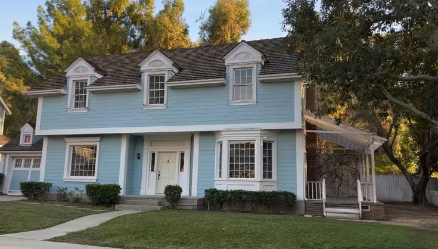

About the Series
Set in 1993, Ted serves as a hilarious and heartfelt prequel to the immensely popular Ted movie franchise. Long before John Bennett grew up, he was a 16-year-old high school student residing in Framingham, Massachusetts, trying to find his place in the world. But his life is anything but ordinary, as his magical, foul-mouthed teddy bear, Ted, lives under the same roof. The series perfectly blends coming-of-age sincerity with outrageous, edgy comedy, exploring the inseparable yet chaotic bond between a teenager and his living stuffed toy as they navigate family dynamics, high school drama, and the absurdities of the 1990s.
As John attempts to survive the unforgiving environment of his high school, he leans heavily on Ted. Whether it's scheming to buy a Nintendo game, dealing with the wrath of the local bullies, or surviving the strict environment enforced by John's gruff father Matty, the duo finds themselves in consistently outrageous situations. Ted, despite his penchant for swearing, smoking, and inappropriate humor, demonstrates a surprisingly profound loyalty to John, emphasizing that true friendship can come from the most unlikely (and stuffed) places. The presence of John's sweet-natured mother Susan and his progressive cousin Blair adds even more dynamic layers to the chaotic but lovable Bennett household.
Themes of the Show
While known for its wild humor, the show deeply explores the meaning of loyalty, friendship, and the awkward journey of growing up. Beneath the furry exterior, Ted often acts as John's anchor in a household full of quirky family members, showing that family comes in all shapes, sizes, and synthetic materials.
Setting the Scene
Immersed in nostalgic 1990s suburban life, the environment feels deeply authentic. From bulky CRT TVs to the distinct fashion and cultural phenomena of the era, the show uses its time period to emphasize how different the world was, yet how universally relatable teenage struggles remain.

Behind the Scenes
Bringing Ted to Life
Creating a photorealistic, interacting teddy bear in a 1993 setting involves a massive technical effort. Unlike traditional sitcoms, Seth MacFarlane records the dialogue live with the actors while performing motion capture, allowing for authentic, improvised comedic timing. The VFX team then seamlessly superimposes the CGI bear into the footage, matching lighting and actor eye-lines perfectly.
The Creator's Vision
Seth MacFarlane envisioned the prequel series as an opportunity to explore John's formative years. The 1990s setting was explicitly chosen not just for nostalgia, but because it predates the overwhelming presence of smartphones and the internet. This allows the humor to focus entirely on family dynamics, bizarre face-to-face social interactions, and purely character-driven comedy.
Series Overview
Production Details
Created by Seth MacFarlane, the comedy series premiered in 2024 and streams exclusively on Peacock. Set in the United States during the culturally distinct 1990s, the show brings a fresh perspective to the beloved franchise while maintaining its signature edgy humor.
Cast & Episodes
The series features a stellar main cast including Seth MacFarlane, Max Burkholder, Alanna Ubach, Scott Grimes, and Giorgia Whigham. Across its 2 seasons and 15 episodes, the talented ensemble consistently delivers laugh-out-loud moments and surprising emotional depth.